Hasta ahora hemos analizado el funcionamiento de algunos videojuegos en Scratch y estudiado la importancia de la interactividad para conseguir un videojuego atractivo.
Hasta ahora hemos analizado el funcionamiento de algunos videojuegos en Scratch y estudiado la importancia de la interactividad para conseguir un videojuego atractivo.
Ahora vamos a analizar lo que nos puede aportar la utilización de variables para mejorar nuestro videojuego.
Combinando todas estas posibilidades, veremos la importancia de las variables para conseguir un videojuego mucho más emocionante.
Empezamos, ¡Adelante!
Variables ¿cómo hacer tu videojuego más atractivo?
Uno de los elementos más utilizados en los videojuegos son las variables.
¿Qué es una variable?
Una variable es como una "caja" donde almacenamos un dato, un valor que puede ir cambiando a lo largo del tiempo y que podemos recuperar en cualquier momento. Las variables sólo pueden contener un valor a la vez.
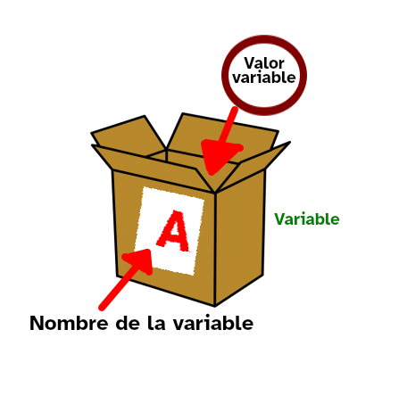
El nombre de la variable es la forma de identificar el valor almacenado en la "caja". Se recomienda utilizar nombres sencillos que tengan relación con el contenido que almacena la variable.
Los datos que se pueden almacenar en las variables pueden ser números o palabras. En programación a las palabras se les denomina una cadena de caracteres.
En líneas generales, en programación según su ámbito de aplicación vamos a distinguir dos tipos de variables: globales; es accesible para todos los procedimientos y locales; solo es accesible desde un único procedimiento, no puede ser leída ni modificada por otros procedimientos.
¿Qué usos podemos darle a una variable?
- Almacenar el número de vidas disponibles en el juego.
- Almacenar los puntos conseguidos en un videojuego cuando ha ganado o alcanzado otro nivel...
- Variar la velocidad de un objeto según las circunstancias del juego.
- Enumerar los distintos niveles del juego.
- Entre otras opciones.
Vamos a observar algunos de los siguientes usos:
Puntuación
Consiste en una variable llamada puntos que inicia su valor a cero cada vez que empieza la partida y con cada objetivo de juego conseguido se suma un punto.
En otros videojuegos se puede aplicar una puntuación decreciente, por ejemplo, se empieza con una puntuación determinada y se van restando puntos cada vez que se cometa un error o un enemigo toca al personaje principal.
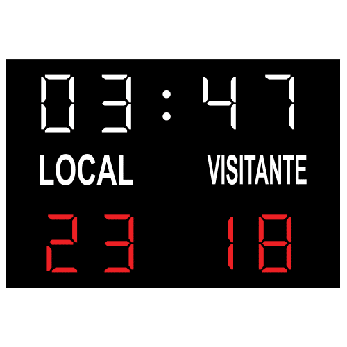
Tiempo
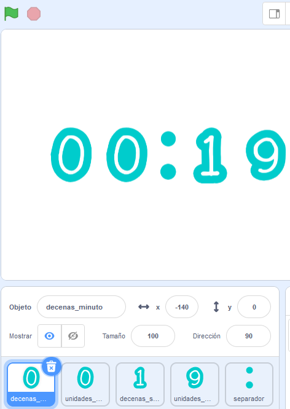
¿Cómo crees que será el juego si le añades un contador de tiempo a la partida?, de forma que cada partida tenga un límite de tiempo para cumplir con el objetivo.
Elige el tiempo que consideres necesario para darle emoción al juego.
Así que habrá que ser rápido en el juego, ¡será más divertido!
Crearemos una variable llamada tiempo con un comportamiento que puede ser creciente o decreciente, aunque lo usual es que vaya disminuyendo para que la jugadora o jugador conozca directamente el tiempo restante de juego. Si se agota el tiempo sin conseguir el objetivo establecido, el juego finaliza.
Vidas
Es muy habitual que en los juegos se ofrezca la posibilidad de que el usuario realice varios intentos para poder terminar la partida con éxito.
En este caso tendremos una variable llamada "Vidas" con un valor inicial que corresponde con el número de vidas al empezar la partida y se irán restando según se cometan errores a lo largo del juego.
En algunos videojuegos se ofrece la posibilidad de sumar vidas cuando se alcance algún objetivo. Elige el que más te guste.
Niveles
Esta variable nos permitirá crear distintos niveles de dificultad o aventuras diferentes en nuestro videojuego.
En los videojuegos se suelen crear distintos niveles de dificultad creciente en los que, cuando se supera un número de punto determinado o se alcanza un objetivo intermedio, se avanza a un nivel superior. Al empezar la partida se suele empezar en el nivel inicial.
Esta variable también puede utilizarse para diferenciar distintas aventuras dentro de un mismo videojuego, permitiendo la posibilidad de pasar de una a otra.
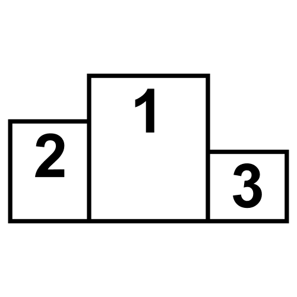
Estados
Podemos utilizar una variable para ir cambiando a lo largo del juego el estado de una característica de un elemento del juego, por ejemplo la velocidad o cualquier otra característica de un personaje u objeto del videojuego.
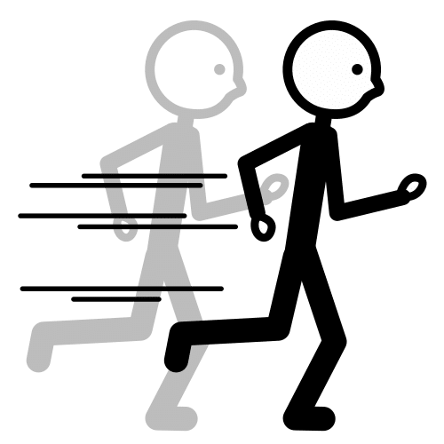
Variables en Scratch
Variables
Una variable en Scratch se crea en la categoría Variable con el botón "crear una variable":
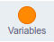
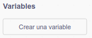
A esta etiqueta se le asigna un nombre, un valor inicial y su valor se va modificando durante la ejecución del programa. Esta etiqueta podemos aprovecharla para hacer cálculos con su valor mediante los operadores o comprobaciones con los bloques de control.
Una vez has creado la variable, tendrás cinco bloques disponibles para usar en tu proyecto:
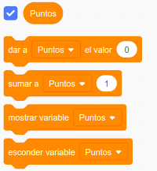
Si la casilla de check que aparece a la izquierda del nombre de la variable está marcada, se verá el contador en el escenario; si no, será invisible.
Visualización
En el escenario la variable se puede ver de tres formas diferentes que podemos cambiar haciendo clic dos veces sobre ella.
| Tamaño normal | Tamaño grande | Deslizador |
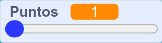 |
Si pinchas con el botón derecho sobre la variable en el escenario, puedes cambiar de una a otra opción, e incluso cambiar el rango del deslizador de la variable.
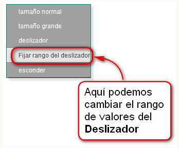
Tipos de variables
La primera operación que tenemos que realizar antes de poder usar una variable es crearla, para lo cual tenemos que seleccionar qué tipo de variables necesitamos:
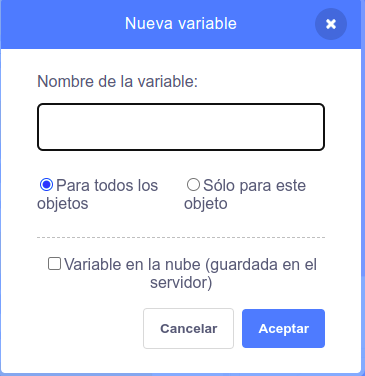
- Globales: es el tipo por defecto cuando una variable es creada en Scratch. Este tipo de variables pueden ser leídas y cambiadas por cualquier objeto y fondo.
- Locales: este tipo de variable puede ser leída por todos los objetos pero sólo puede ser cambiada por el objeto para el que fue creada. Este tipo de variables se crean marcando esta opción en el cuadro de diálogo de creación de nueva variable en Scratch. Los escenarios no pueden tener variables locales.
- En la nube: en este caso las variables son almacenadas en el servidor. Cuando estas variables se actualizan lo hacen en todas las copias del proyecto abiertas. También se guarda su valor para la próxima vez que se abra el proyecto. Este tipo de variable puede ser interesante para guardar el récord de puntos de tu proyecto.
Aplicaciones de las variables en Scratch
Vamos a ver cómo se pueden crear en Scratch los distintos usos que podemos darle a las variables en los videojuegos:
Puntuación
La variable puntos la podemos crear en la categoría de Datos y se crea pulsando sobre el botón “Crear una variable”. Podremos escoger entre: “Para todos los objetos” si queremos que cualquier objeto de nuestro videojuego pueda ver y manejar esta variable o bien “Sólo para éste objeto” si sólo este objeto va poder acceder a la variable. Si tienes dudas, escoge la primera opción.
Cada vez que se presiona la bandera verde se inicia su valor a cero y con cada objetivo de juego conseguido se suma un punto.
Aquí tienes un vídeo explicativo de como añadir un contador de puntos.
Por ejemplo, unos posibles bloques de programación para esta variable puntos en el juego de Fish Chomp, pueden ser:
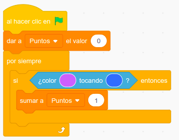
Cada vez que se toca el color del pez hambriento con el color del pez pequeño, sumamos un punto en la variable Puntos.
Tiempo
Crearemos una variable llamada Tiempo en el apartado de Datos, su comportamiento puede ser creciente o decreciente, aunque lo usual es que vaya disminuyendo para que la jugadora o jugador conozca directamente el tiempo restante de juego.
Cada vez que se presiona la bandera verde se inicia su valor al establecido para la partida y si se agota sin conseguir el objetivo establecido, el juego finaliza.
Una posible combinación de bloques para un contador de tiempo puede ser la siguiente.
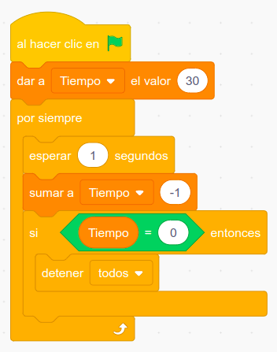
Otra forma de conseguir el mismo resultado con otros bloques:
- Crea una variable a la que puedes llamar "tiempo".
- Dale el valor inicial que se desea a esta variable (tiempo de juego).
- Añade un bloque repetir debajo, tantas veces como el valor de la variable tiempo, espera un segundo y sumar a la variable tiempo el valor uno negativo.
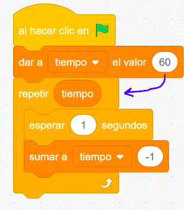
Una tercera forma, es crear el contador de tiempo con el bloque cronómetro que puedes encontrar en la categoría sensores. Pero ten presente que es un reloj que avanza hacia adelante, así que tendrás que crear una variable para restar al valor inicial la cuenta del cronómetro.
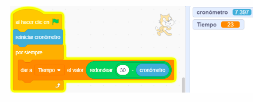
Vidas
Debemos crear una variable, esta se visualizará automáticamente y podremos actuar sobre su contenido mediante los bloques de la pestaña “Datos”. En este caso se trata de una variable con un valor inicial que corresponde con el número de vidas al empezar la partida se irán restando según se cometan errores a lo largo del juego.
Un truco: si haces doble clic sobre el marcador cambiará de aspecto. Elije el que más te guste.
En este ejemplo de Programamos con Scratch se añaden vidas al videojuego del laberinto.
Por ejemplo, una posible combinación de bloques de programación para la variable vidas para el videojuego Fish Chomp, puede ser la siguiente:
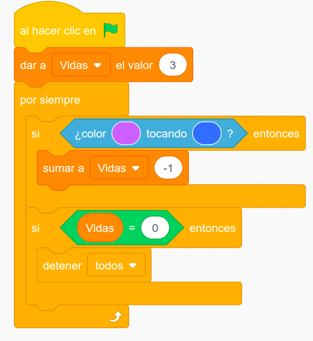
Cada vez que se toque el color de un pez enemigo con el color del pez hambriento le restará una vida en la partida.
Niveles
Esta variable la podemos crear igual que las anteriores.
En el siguiente vídeo del juego Pong en Scratch se han creado dos niveles de dificultad crecientes en los que cuando se supera un número de puntos determinado se avanza al siguiente nivel que presenta movimientos más rápidos de la pelota.
Por ejemplo, a continuación te presento una posible combinación de bloques de programación para la variable nivel: de un videojuego en el que se computan puntos.
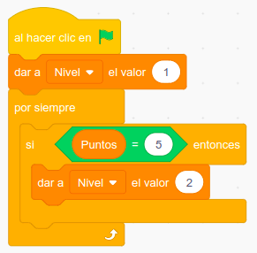
Cuando se alcancen los cinco puntos acumulados, el juego pasará al segundo nivel.
Estados
Podemos crear esta variable por el mismo método que las anteriores.
Es recomendable definir la variable con un nombre significativo de la característica del elemento del juego que vamos a controlar, por ejemplo "velocidad" para regular la rapidez de los movimientos del personaje u objeto del videojuego.
A continuación, te presento una posible combinación de bloques de programación para una variable velocidad que varía su valor dependiendo del nivel del juego.
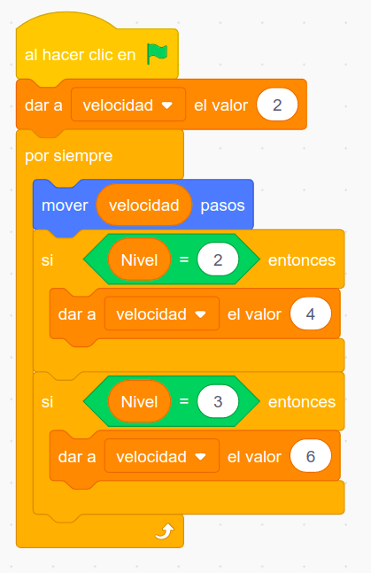
Incorpora un contador de puntos en el videojuego Fish Chomp
A continuación, trabaja en pareja, para incorporar un contador de peces mordidos que computaremos como puntos en el videojuego Fish Chomp.
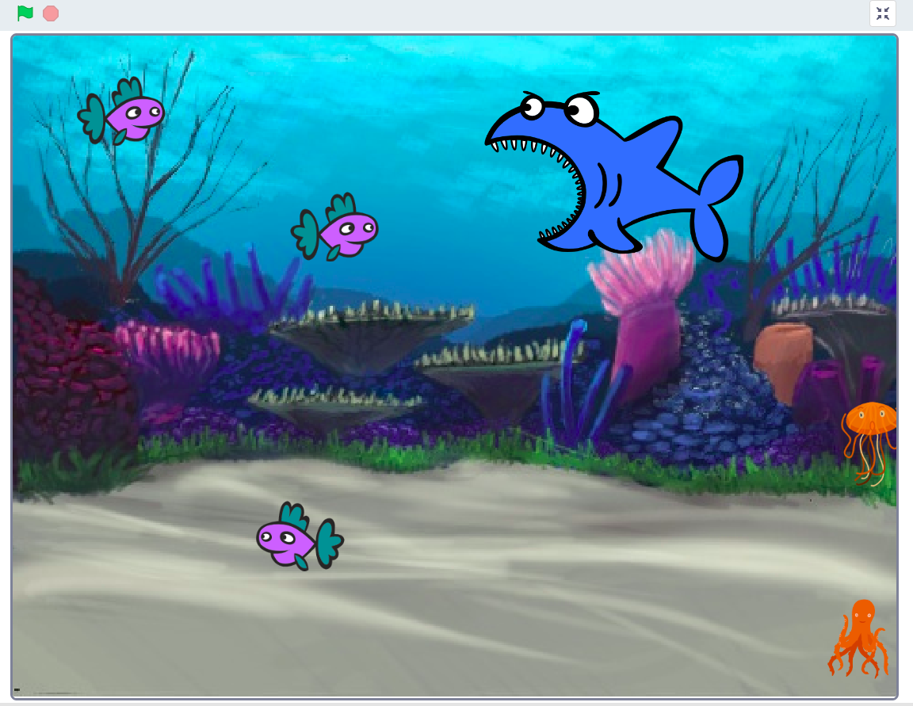
Piensa en los bloques de programación necesarios para que funcione un contador de puntos en el videojuego de Fish Chomp, de forma que cada vez que sea mordido un pez, sume un punto.
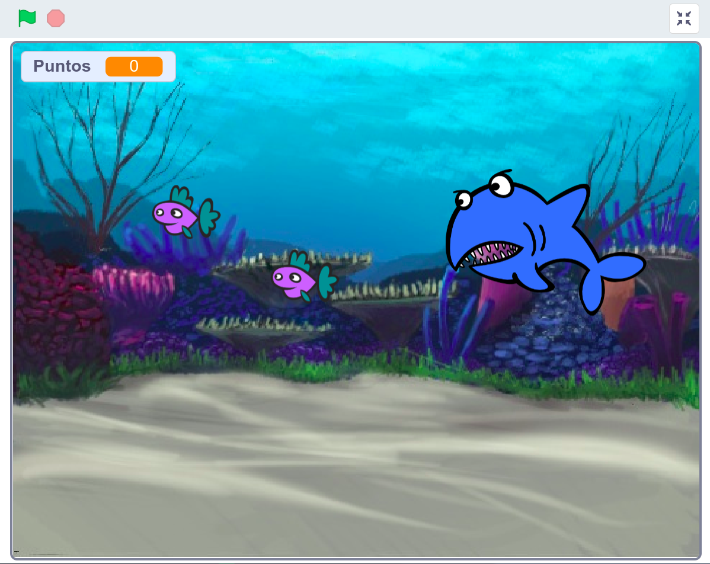
Lumen dice ¿Necesitas ayuda con este ejercicio?
Ten presente que cuando nuestro pez muerda a otros pequeños peces, se sumará puntos en la partida. Hay dos personajes involucrados en esta dinámica (pez mordedor y peces pequeños), así que tienes distintas formas de programarlo.
A continuación, te presento varios conjuntos de bloques, debes ordenarlos debajo de los dos eventos de la izquierda y añadirle cada conjunto al personaje que corresponda.
Bloques desordenados de uno de los personajes:
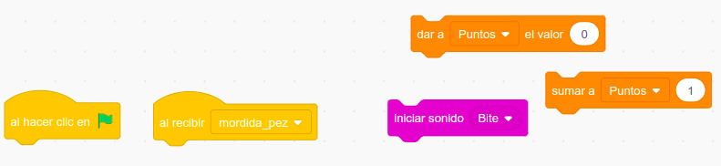
Bloques desordenados del otro personaje:
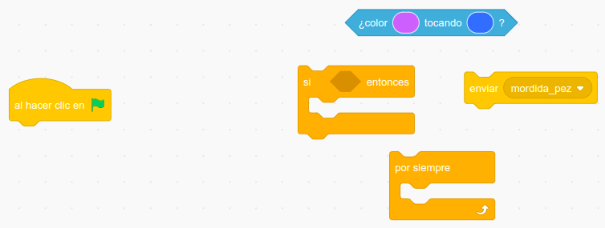
Añade tiempo límite al videojuego Fish Chomp
En este ejercicio te propongo añadir los bloques de programación necesarios para que al videojuego de Fish Chomp tenga tiempo límite en cada partida.
Seguro que lo haces muy bien. ¿Te atreves?
Por lo tanto, el trabajo consistirá en incorporar al juego un contador de tiempo de la partida.
Así que tendrás que ser rápido en el juego para morder el máximo número de peces posibles. De esta forma conseguirás que el juego sea más emocionante.
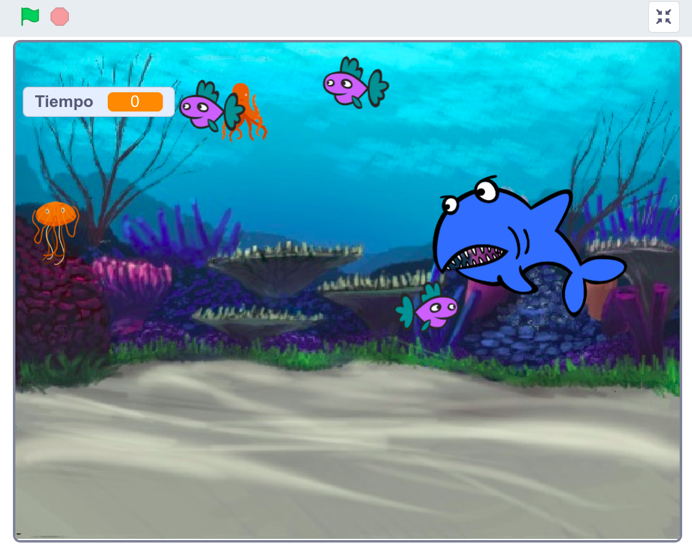
Para estas mejoras te propongo utilizar alguna de las combinaciones de bloques para un contador de tiempo vistas en el punto anterior.
Lumen dice ¿Necesitas ayuda para empezar el ejercicio?
Ya sabes que hay múltiples formas de programar para conseguir un mismo fin. Al igual que existen muchos caminos diferentes para desplazarnos de un sitio a otro, aunque normalmente escogemos uno por algún motivo. En muchas ocasiones elegimos el camino más corto.
En programación funcionamos de forma similar, intentaremos usar el menor número de bloques posibles. No te preocupes que con la práctica verás como cada vez tus programas son más cortos.
Empieza probando la primera combinación de bloques propuesta en el punto anterior y recuerda añadir las instrucciones necesarias para que al finalizar el tiempo el juego se detenga.
Contador de vidas
Vamos a crear los bloques de programación que mejoren el videojuego de Fish Chomp.
Te propongo una nueva mejora, pero seguro que puedes aportar por lo menos otra mejora más. ¿Te atreves?
Contador de vidas
Que tenga un contador de vidas, de forma que cada vez que toque al pez mordedor alguno de los animales marinos que no sean peces se descuente una vida.
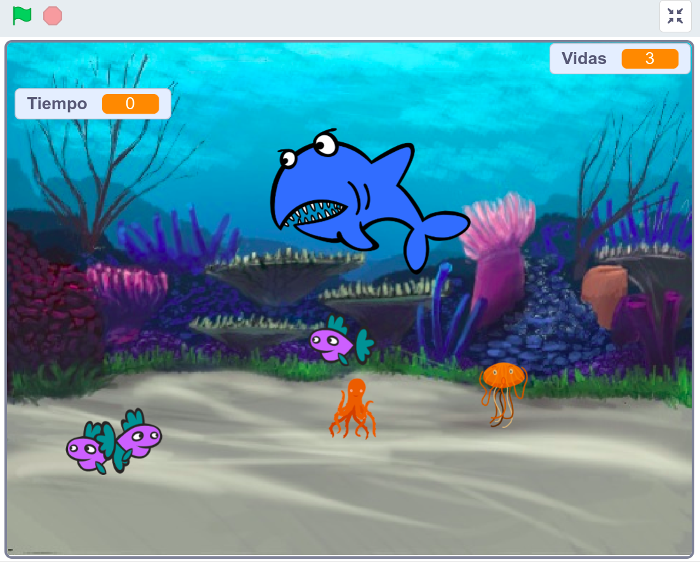
También puedes aportar tú propia mejora al videojuego.
Para estas mejoras te propongo utilizar los siguientes bloques, coloca los bloques de la derecha en el lugar adecuado del conjunto de bloques de la izquierda.
Cuando el pez sea tocado por el resto de animales marinos que no sean peces, se pierda una vida. Igualmente hay dos personajes involucrados en esta dinámica (enemigo y personaje principal), así que tienes múltiples formas de programarlo.
Aquí tienes dos conjuntos, debes ordenarlos y añadirlos al personaje que corresponda.
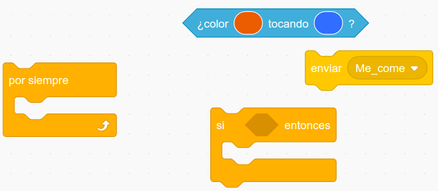
Los bloques desordenados del otro personaje son: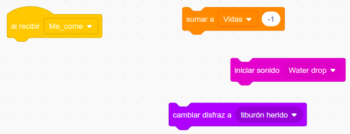
Niveles del juego
Vamos a crear los bloques de programación que mejoren el videojuego de Fish Chomp.
Te propongo una mejora, pero seguro que puedes aportar por lo menos otra mejora más. ¿Te atreves?
Que tenga un contador de los niveles del videojuego, de forma que cada vez que cuando se alcance alguna condición u objetivo del juego se avance a un nivel superior.
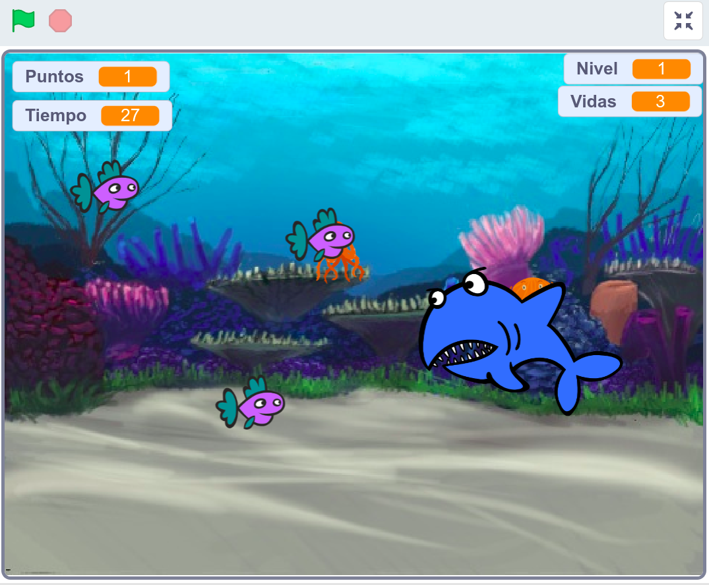
También puedes aportar tú propia mejora al videojuego.
Para esta mejora que te propongo puedes utilizar los siguientes bloques, coloca los bloques de la derecha en el lugar adecuado del conjunto de bloques de la izquierda.
El videojuego empezará en un nivel inicial y cuando nuestro pez alcance un número de puntos determinado, la aventura pasará a un nivel superior que tenga un mayor nivel de dificultad.
Por ejemplo puedes hacer que aparezcan más personajes secundarios enemigos en la partida.
Aquí tienes una propuesta de bloques de programación en la que el juego cambia al nivel 2 cuando se alcanzan los 5 puntos.
¿Te atreves a crear tu propia propuesta de programación para el cambio de nivel del juego cuando se alcance alguna condición u objetivo?
Mejoras del videojuego Fish Chomp
Vamos a crear los bloques de programación que mejoren el videojuego de Fish Chomp.
Te propongo varias mejoras, pero seguro que puedes aportar por lo menos otra mejora más. ¿Te atreves?
Velocidad variable de los personajes
Que tenga una variable de alguna característica de los personajes del videojuego, de forma que cuando se avance de nivel o se alcance alguna condición u objetivo del juego, este valor cambie de tal forma de crear una aventura variable y divertida.
Este tipo de variables se suelen dejar ocultas en el escenario. El jugador no suele ver su valor durante la partida.
Un ejemplo común de esta característica variable suele ser la velocidad de los personajes.
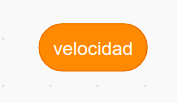
Aporta tu propia mejora al videojuego
Este tipo de variables se suelen dejar ocultas en el escenario. El jugador no suele ver su valor durante la partida.
También puedes aportar tú propia mejora al videojuego.
Para estas mejoras te propongo utilizar los siguientes bloques, coloca los bloques de la derecha en el lugar adecuado del conjunto de bloques de la izquierda.
Velocidad variable de los personajes
El videojuego empezará con una velocidad inicial de los personajes y cuando nuestra aventura pase a un nivel superior este valor se incrementará para los personajes secundarios aportando un mayor nivel de dificultad al juego.
Aquí tienes varios conjuntos, debes ordenarlos debajo del evento de la izquierda y añadir cada conjunto al personaje que corresponda.
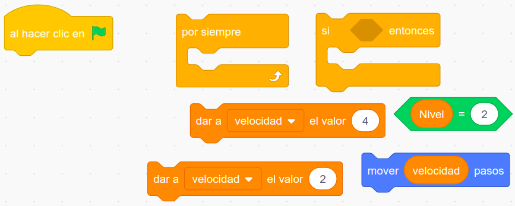
Otras ideas de mejora
El videojuego empezará con una velocidad inicial de los personajes y cuando nuestra aventura pase a un nivel superior este valor se incrementará para los personajes secundarios aportando un mayor nivel de dificultad al juego.